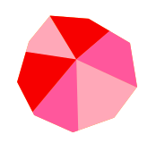
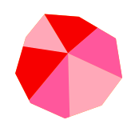
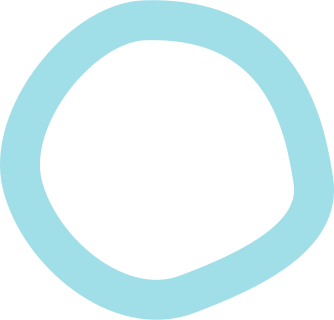
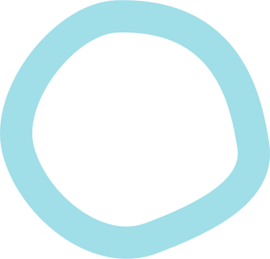

 



Открытие фестиваля у Дома культуры
Клоунская кавалькада через мост к основной сцене на набережной Волги
Цирковая программа «Наш Карандаш», сборная ГУЦЭИ
Клоунский дивертисмент (театры «Комик-Трест», «Мимигранты», «Авабука» и другие)
Спектакль «Авиатор», театр «Микос»
Гала-концерт Tinto Brass Band & Fortuna Brass и парад-алле всех артистов фестиваля
На территории «Союзмультфильма» в Доме культуры — показы раритетных мультфильмов специально для «Карандаш-фест»
На летней эстраде парка «Старицкое зарядье» — цирковые и творческие студии Тверской области
Возле Борисоглебского храма будет припаркован (по погоде) воздушный шар— вы сможете увидеть Старицу с высоты птичьего полета.
В Городском саду вас ждет концерт-сюрприз


от Москвы до Старицы — 2 часа («Сапсан» + автобус или такси), от Петербурга — 4 часа («Сапсан» + автобус или такси)
то дорога займет 3 часа по скоростной трассе М11, съезд около Твери, оттуда 50 минут по Старицкому шоссе — и вы в очаровательной Старице!
отмечены на карте фестиваля, при въезде в город также увидите навигацию!
даже не волнуйтесь — на фестивальной ярмарке будет много местных специалитетов и горячие пельмени!
одним днем, а можно и с ночевкой. Скачайте список отелей — партнеров фестиваля со специальными условиями для гостей «Карандаш-фест» по ссылке